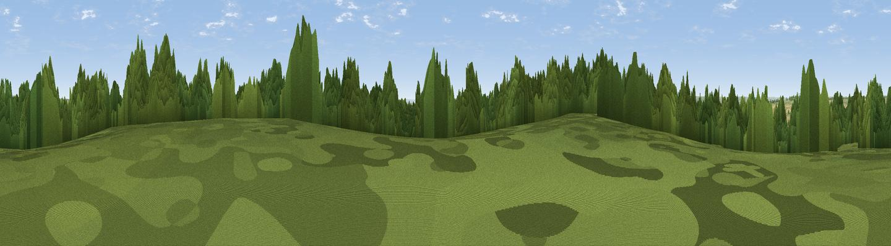

Viewpoint near Ascott-under-Wychwood
#30070 in England · top 57% of its area beats it · near Ascott-under-WychwoodThe view, rendered

A 360° render of this exact spot computed from the terrain model, tree cover and land cover — summer colours, afternoon light, calibrated against photographs of famous viewpoints. Real trees, hedges and buildings will differ in detail.
The panorama
Grey silhouette: terrain skyline in each direction (720 bearings, Earth curvature and refraction included). Dashed green: skyline with trees (+15 m) and buildings (+8 m) as obstacles. Blue strip: how far the ground is visible on each bearing.
Where the view opens
Wedge length = distance to the farthest visible ground on that bearing (vegetation-aware). Rings at 10, 25 and 50 km.
What fills the view
41% cropland · 33% woodland · 25% grassland · 2% built-up
Angular shares of the visible panorama (visual magnitude), not map area. Landscape diversity 0.50 (0–1 Shannon).
Key numbers
More beautiful places nearby
The staircase of upgrades: each row has a higher view potential than everything closer. Driving times are estimates from straight-line distance, calibrated against real road routing — check an actual route before setting out.
| Place | Direction | Drive | Score |
|---|---|---|---|
| Viewpoint near Sarsden | NW · 4 km | ~10 min | 51.4 |
| Viewpoint near Adlestrop | NW · 12 km | ~23 min | 56.9 |
| Viewpoint near Little Rollright | NNW · 13 km | ~23 min | 58.7 |
| Viewpoint near Little Rollright | NNW · 13 km | ~24 min | 63.5 |
| Viewpoint near Icomb | WNW · 13 km | ~24 min | 63.9 |
| Viewpoint near Little Rollright | NNW · 13 km | ~24 min | 64.2 |
| Viewpoint near Little Compton | NNW · 14 km | ~26 min | 67.2 |
| Viewpoint near Upper Brailes | N · 21 km | ~36 min | 68.5 |
51.86121, -1.52837 · source: screening · position refined by local search. Computed location — check access rights before visiting.